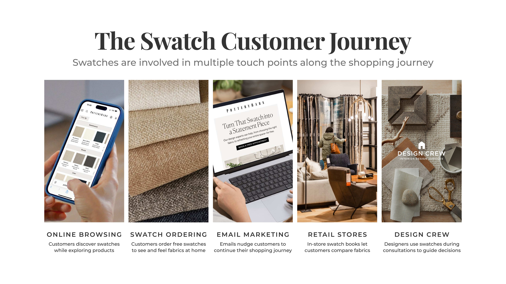
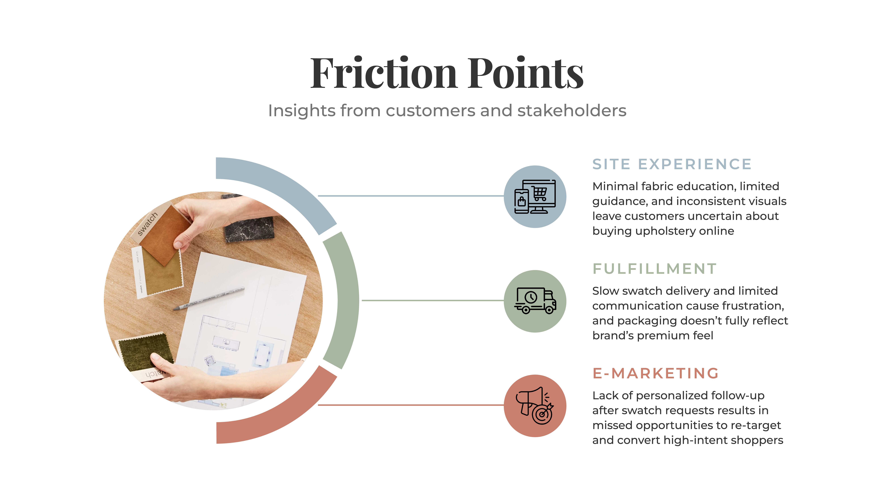
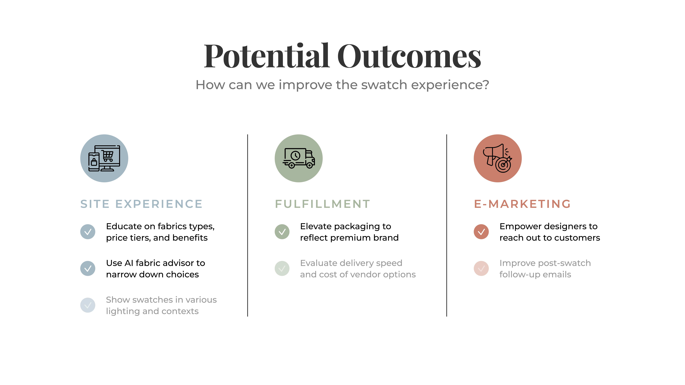
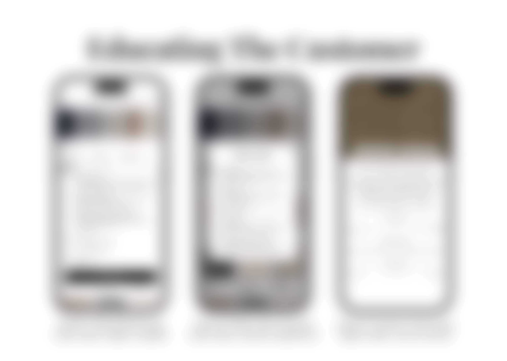
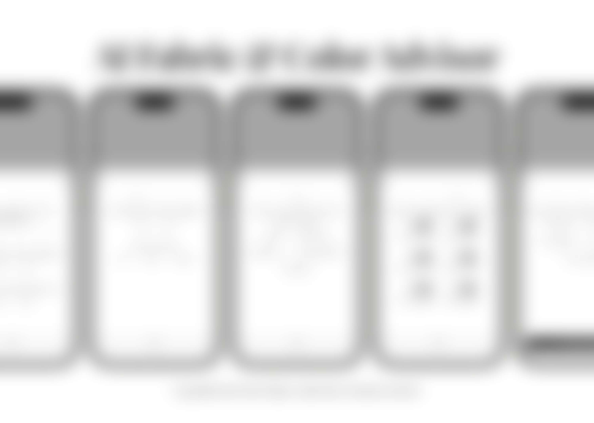
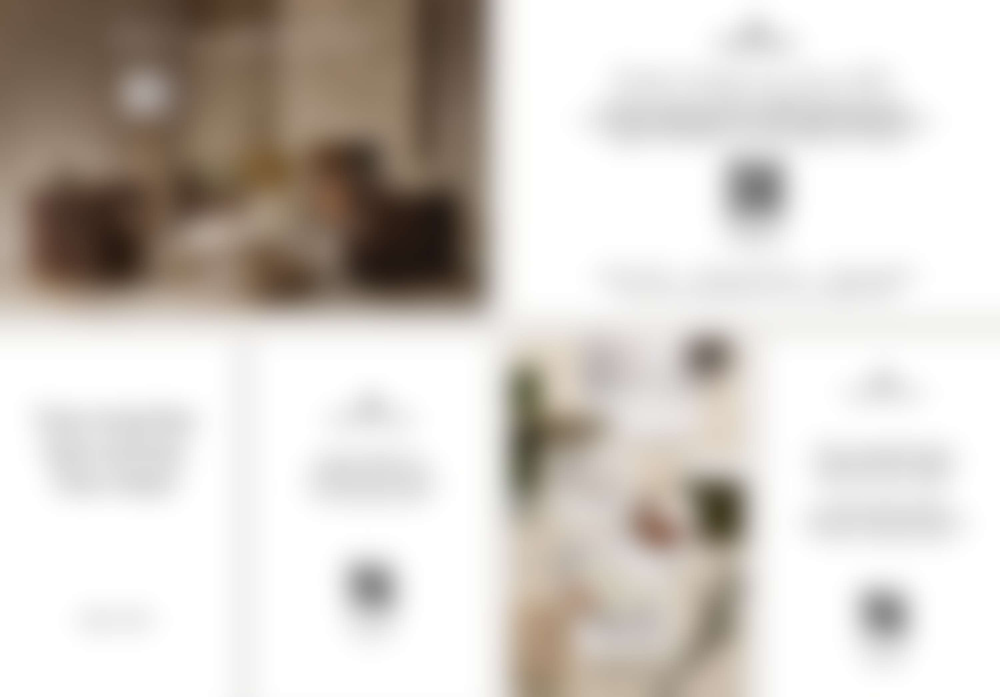
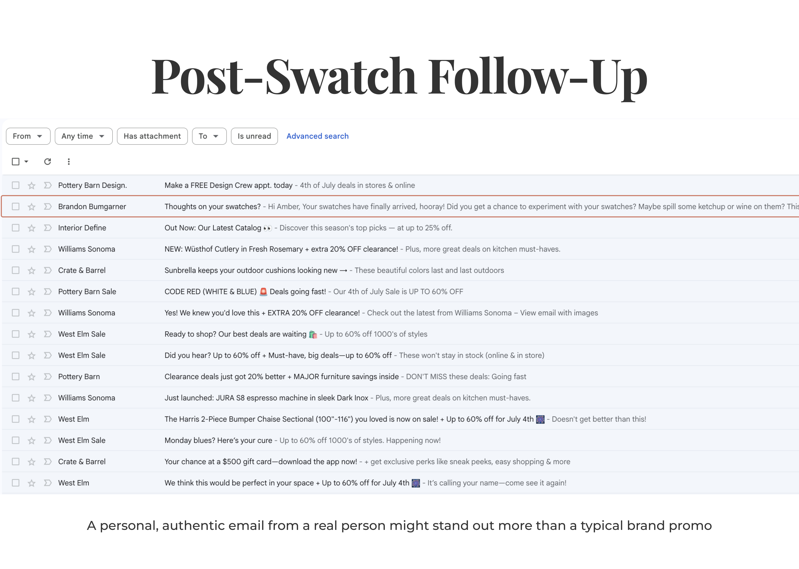
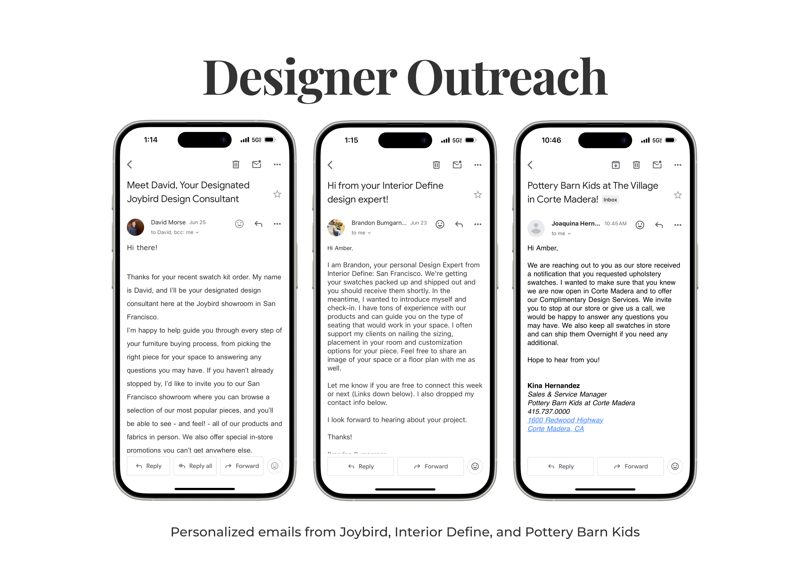

Context
Swatches are a key moment in the purchase journey.
When shopping for furniture, customers often order fabric swatches to see and feel materials before making a purchase. This touchpoint can influence confidence, conversion, and engagement with a Design Crew expert. My goal was to identify opportunities to improve the swatch experience across Williams-Sonoma, Inc. brands.

Research
Mapping the journey from browsing to post-swatch engagement.
I talked with 45+ stakeholders across product, UX, engineering, retail, fulfillment, marketing, and creative to hear different perspectives on the swatch experience. These conversations also gave me access to internal research, customer data, and other resources that helped shape my analysis. Additionally, I conducted competitive audits by reviewing other websites and ordering swatches to evaluate the fulfillment and post-swatch experience firsthand. I synthesized my findings into three areas of friction: site experience, fulfillment, and e-marketing.

I prioritized opportunities based on customer impact, feasibility, and timeline, focusing on high-impact wins that could realistically be explored within the project scope. Opportunities shown in gray were deprioritized due to technical complexity or reliance on external partners.

Recommendations
Three opportunities to enhance the swatch experience.
Help customers choose the right fabric.
Clarify unfamiliar fabric terms and help customers narrow options based on preferences and lifestyle.


Elevate the swatch delivery experience.
Add a branded postcard with a QR code to connect the physical experience with Design Crew services.

Keep customers engaged after delivery.
Use more targeted outreach to help customers take the next step and connect with a designer.


Next Steps
Test the ideas, learn what works, and scale from there.
Reflection
Turning ambiguity into an actionable product roadmap.
This project taught me how to navigate an open-ended problem, balance customer impacts with feasibility, and turn research into clear product decisions. It strengthened how I approach ambiguity: understand the problem first, prioritize what matters most, and leave with actionable next steps.